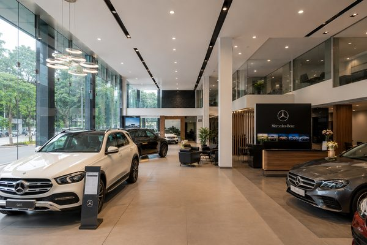

Note: The following are concept designs and design visualisations created by Mu'afah to demonstrate our design approach and detailing — they illustrate our capability rather than claim specific completed, client-delivered construction.
Residential Architecture Chennai
Contemporary Independent House Concept
G+1 Independent House Design · 4,200 sq ft
View Design Concept→
Gated Community Master Planning
Master-Planned Residential Community Concept
Gated Community Master Plan · 2.5 acres · 48 units
View Design Concept→
Luxury Villa Design Chennai
Luxury Villa Elevation & Interior Concept
G+2 Luxury Villa Design · 6,800 sq ft
View Design Concept→
Commercial Architecture Chennai
Multi-Tenant Commercial Building Concept
Ground+5 Commercial Building Design · 38,000 sq ft
View Design Concept→
Retail Mall Design Chennai
Retail Mall Design Concept
Three-Level Retail Mall Design · 62,000 sq ft
View Design Concept→
Home Interior Design Chennai
Whole-Home Interior Design Concept
Whole-Home Interior Design · 1,850 sq ft (3BHK)
View Design Concept→
Modular Kitchen Design Chennai
Modular Kitchen & Dining Interior Concept
Modular Kitchen & Dining Interior Design · 340 sq ft
View Design Concept→
Automobile Showroom Design Chennai

Automobile Showroom Interior Concept
Showroom Interior Design · 8,200 sq ft
View Design Concept→
Office Interior Design Chennai
Corporate Office Interior Concept
Full-Floor Office Interior Design · 12,500 sq ft
View Design Concept→
Kids Room Interior Design Chennai
Children's Bedroom Interior Concept
Children's Bedroom Interior Design · 180 sq ft
View Design Concept→
Prayer Room Design Chennai
Prayer Room Interior Concept
Dedicated Prayer Room Interior Design · 70 sq ft
View Design Concept→
Balcony & Sit-Out Design Chennai
Balcony Sit-Out Interior Concept
Balcony Sit-Out Interior Design · 90 sq ft
View Design Concept→
False Ceiling Design Chennai
False Ceiling & Lighting Design Concept
False Ceiling & Cove Lighting Design · 420 sq ft (living & dining)
View Design Concept→